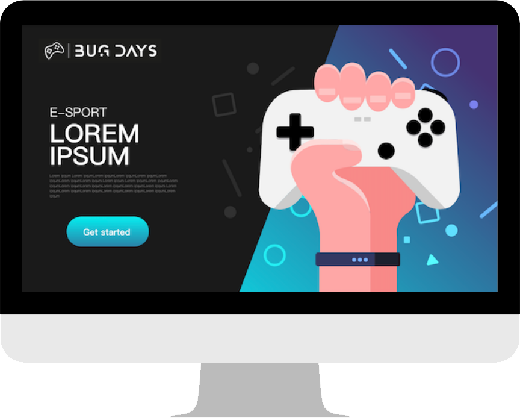
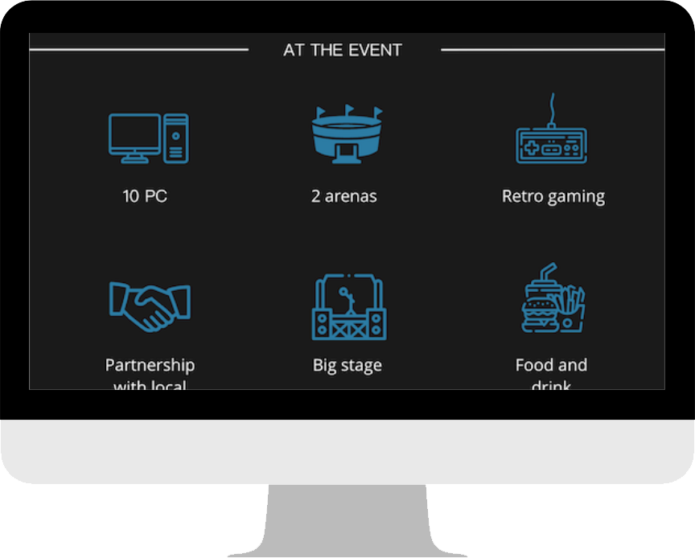
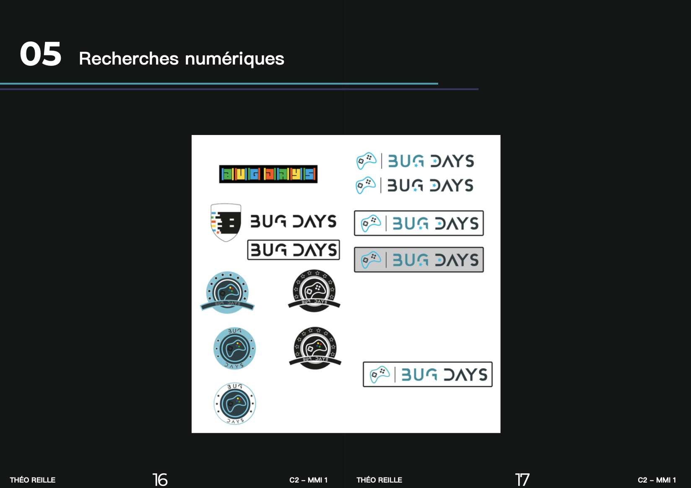

- 
- 
- 

Landing Page
Projet individuel
L’objectif de ce projet était de réaliser une landing faisant la promotion de l'évènement e-sport BUG DAYS. Pour cela, nous devions concevoir un logo et créer une animation de ce dernier. Réaliser une maquette d'une landing page. Et enfin la rédaction d'une charte graphique pour exposer toute notre démarche qui nous a permis d'arriver à ce résultat.
Recherche sur les autres concurrents dans le domaine de l'e-sport
Recherche d'inspiration pour notre logo
Définir une cible principale et une cible secondaire
Réalisation de personas
Réalisation de croquis et de concepts
Recherche numérique
Production du logo sur Adobe Illustrator
Animation du logo en CSS
Réalisation de la landing page sur Adobe XD
Rédaction de la charte graphique sur InDesign